总结
这篇研究用作者自己的 162 天 Claude Code 会话回答一个问题：上下文窗口该开多大、什么时候压缩？
- 上下文成本是幂律：每翻一倍窗口，累计 token 成本约涨 6 倍。
- 大窗口的真实成本不在“一次请求”，而在后续每次工具调用都要重读窗口。
- 缓存降低单价，但不能消除“每一步都重新购买”。
- 600k 以上时，只有约 2.5% 的上下文真正参与决策。
- 压缩有代价：压缩后约 30 步，用户纠正率从 17.7% 升到 41.9%。
- 成本最优阈值约 22 万 token；算上压缩返工，推荐 25–45 万。
- 比“更早压缩”更好的杠杆：保留 3–6 万 token 的逐字尾部。
原文逐段对照翻译
翻译说明：以下按原文 H2/H3 结构逐段翻译，保留全部数据、图注和实验方法；11 张图已下载到本地并放回原文对应位置。
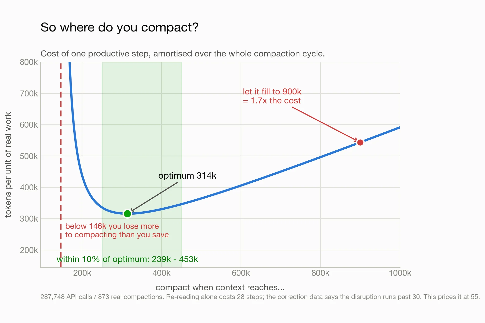
TL;DR
You should compact, and probably more often than you do. Somewhere between 250k and 450k tokens. Each doubling of context costs roughly 6x more, so be deliberate about which work earns a big window. I could find no justifiable benefit in letting an agent run anywhere near 1M.
你应该压缩，而且可能要比现在更频繁。阈值大约在 25 万到 45 万 token 之间。上下文每翻一倍，成本约涨 6 倍，所以要谨慎决定哪些工作值得开大窗口。我没有找到任何证据，能证明让 agent 跑到接近 100 万 token 是合理的。
A big context window does not cost what it looks like it costs, because when your agent does 25 tool calls on a follow-up at 500k context, that is not one cached request to the LLM at 500k tokens, but 25 x 500k, and increasing.
大窗口的成本不是表面看起来那样。当 agent 在 50 万上下文下做 25 次工具调用时，不是一次 50 万 token 的缓存请求，而是 25×50 万，而且还在增长。
What token spend alone cannot show you is the quality cost of compacting: for dozens of steps after a compaction the agent makes visibly worse decisions. We modeled that too, and still could not justify the trade-off on tokens.
只看 token 花费，还看不到压缩的质量代价：压缩后的几十步里，agent 的决策会明显变差。作者把“压缩导致更多错误”的长期成本也建模了，结论仍然是：从 token 角度无法证明宽窗口划算。
The day the limit died
On the last Friday of July my session limit went from fine to exhausted in minutes. I waited the 5h, resumed the work, and got tokens exhausted in minutes again. I had a suspect: subagents.
七月最后一个周五，作者的会话额度几分钟内从正常变成耗尽。等了 5 小时恢复，又几分钟耗尽。他怀疑是 subagent。
Checked LangWatch: 2.25 billion tokens in one day, 82% of it from subagents rather than from anything I typed.
查 LangWatch：一天用了 22.5 亿 token，其中 82% 来自 subagent，而不是他手动输入的内容。
Two agents spent half the day
Of the 2.25 billion tokens, 1.14 billion came from two subagents out of thirty-four. They were both forked subagents, meaning they were spawned holding a full copy of the parent coordinator's conversation. One lived 10.7 hours and made 1,301 API calls, the other 8.7 hours and 595.
22.5 亿 token 中，有 11.4 亿来自 34 个 subagent 里的两个。它们都是 forked subagent，启动时复制了父会话的完整上下文。一个运行 10.7 小时、做了 1,301 次 API 调用；另一个 8.7 小时、595 次。
A fork starts at the parent's context size, so these two began at 523K and 304K tokens instead of the roughly 30,000 a fresh subagent gets. A long-lived worker only accumulates from there, and the first one peaked at 997,634 tokens, within 0.3% of the model's hard ceiling.
fork 会从父会话的上下文大小开始，所以这两个 subagent 的起点是 52.3 万和 30.4 万 token，而不是新 subagent 的约 3 万。长生命周期 worker 还会继续累积，第一个峰值达到 997,634 token，离模型硬上限只差 0.3%。
Three ordinary decisions multiplied into that: a fork starts at the parent's context size, a long-lived worker only accumulates, and every lint, typecheck and test run is another API call that re-reads the whole window. Combined, they turned these two into extreme outliers.
三个单独看都合理的决定叠加成了灾难：fork 从父上下文大小起步；长生命周期 worker 会持续累积；每次 lint、typecheck、测试都是又一次重读整个窗口的 API 调用。组合起来，这两个 subagent 变成了极端离群点。
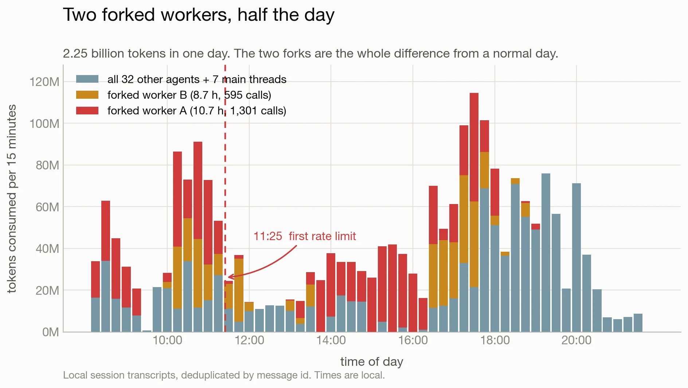
The tax is a power law
Reaching 100k of context costs a median of 1.4M tokens. Reaching 200k costs 9M. Reaching 800k costs 338M, which is 250 times the 100k figure for 8 times the window. The fit is a power law with exponent 2.55 and an R² of 0.994. In other words, every doubling of context costs about 6x more.
达到 10 万上下文，中位数要花 140 万 token；20 万要 900 万；80 万要 3.38 亿。80 万是 10 万的 8 倍，成本却是 250 倍。拟合结果是幂律，指数 2.55，R² 0.994。换句话说，上下文每翻一倍，成本约涨 6 倍。
Why 2.5 and not plain quadratic? The amount added per step shrinks as the window fills, from about 3,200 tokens per step below 50k to a stable 1,470 above 200k, so the last stretch of a window is accumulated in many small increments, and every one of them pays the full window price.
为什么指数是 2.5 而不是普通二次方？每步新增量会随窗口变满而下降：5 万以下约 3,200 token/步，20 万以上稳定在 1,470。最后一段窗口由很多小步累积，而每一步都按整个窗口付费。
Caching does not save you here either. Cache reads are about 10x cheaper per token, but they were also 95% of everything the blowup day consumed: a cached token is still a token you buy again on every single step.
缓存也救不了：缓存读取单价便宜约 10 倍，但在“爆表日”里占总消耗的 95%。缓存 token 仍然是每一步都要重新买的 token。
Dividing tokens read by tokens of output gives the tax rate directly, and the curve is a U rather than a slope: it bottoms out near 75k at 217 tokens read per token produced and reaches 2,290 to 1 at 900k. Below about 50k the model has not accumulated enough to produce anything substantial, so tiny windows are wasteful as well.
用读取 token 除以输出 token，可以得到“税率”。曲线是 U 形：最低点在 7.5 万附近，比例 217:1；90 万时达到 2,290:1。低于 5 万时，模型还没积累足够上下文，产出不了实质内容，所以小窗口也浪费。
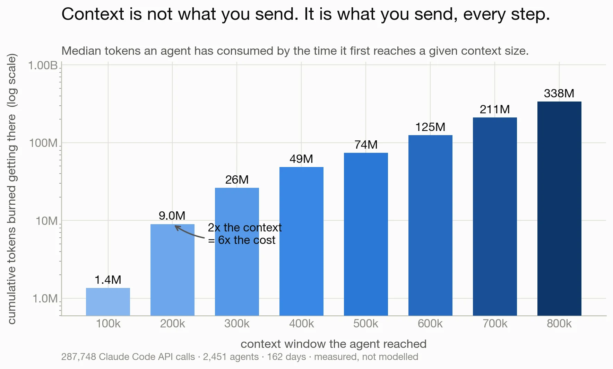
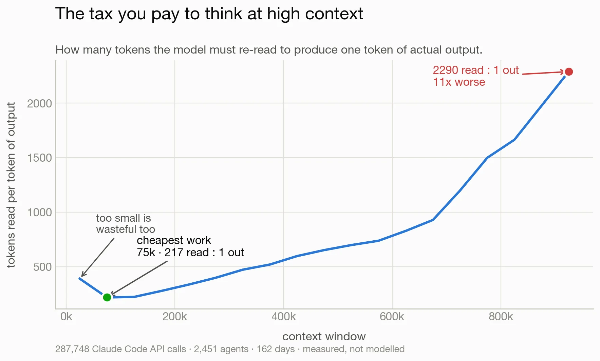
Across 2,107 subagents, each handed exactly one directive, the median takes 20 API calls. The 90th percentile takes 72, the 99th takes 359, and the worst single agent took 1,545. The top 10% of agents account for half of all calls.
在 2,107 个只执行一条指令的 subagent 中，中位数 20 次 API 调用，P90 72 次，P99 359 次，最差 1,545 次。前 10% 的 agent 占了一半调用。
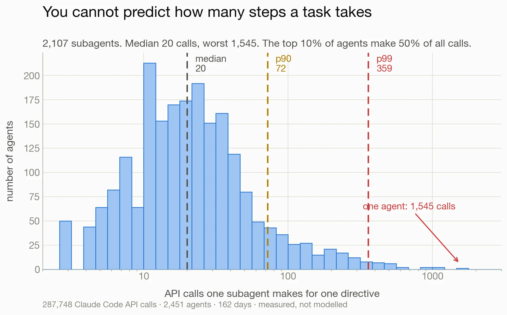
Where compaction pays, if cost is all you count
Across 873 real compaction events, a compaction lands the session at a median of 65,588 tokens, context then grows about 1,470 tokens per step, and for roughly 28 steps afterward the agent re-ingests context above its own steady-state rate.
873 次真实压缩中，压缩后中位数落在 65,588 token；之后上下文约每步增长 1,470 token；接下来约 28 步，agent 会以高于稳态的速度重新摄入上下文。
Put the cycle together and cost per unit of real work is a bathtub with a steep left wall. The minimum sits at 220,000 tokens, anything from 170k to 316k is within 10% of it, and below about 110k the whole thing stops working because rediscovery eats more steps than the cycle gives back.
把周期合起来看，单位真实工作的成本是一条浴缸曲线：最低点在 22 万 token，17–31.6 万都在最优值 10% 以内；低于约 11 万会失效，因为重新发现的成本超过收益。
Compacting 90k too early costs 1.79x the optimum; compacting 96k too late costs 1.10x. When you are unsure, err late. Letting the window fill before compacting is 2.3x worse than compacting at 220k.
提前 9 万压缩，成本是最优的 1.79 倍；推迟 9.6 万压缩，成本是最优的 1.10 倍。不确定时宁可晚压。让窗口填满再压缩，比在 22 万压缩差 2.3 倍。
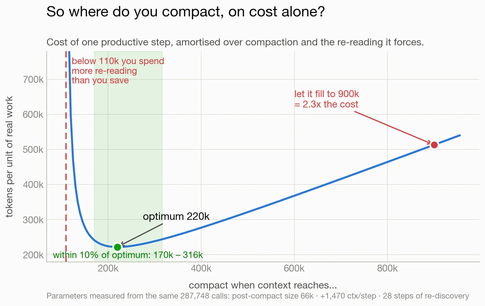
Across 10,037 repeat references the median is only 7,430 tokens back, but the tail is long. A 100k window catches 72.4% of repeat references, 200k catches 77.6%, and 500k catches 82.6%. A 200k window therefore reaches 94% of everything a window can ever reach, and coverage per unit of cost peaks at 240,000 tokens.
10,037 次重复引用中，中位数只回溯 7,430 token，但长尾很长。10 万窗口覆盖 72.4%，20 万覆盖 77.6%，50 万覆盖 82.6%。所以 20 万已经达到“任何窗口最终能达到的 94%”；单位成本覆盖率在 24 万达到峰值。
But is any of that context useful?
All of the above measures what context costs, not whether it was doing anything. Cost data cannot answer that: a token is charged whether it contributes or not. So the author ran an audit, segmenting the corpus into 3,036 runs and sampling steps stratified by kind of work and context size.
以上都在衡量上下文的成本，而不是它是否真的有用。成本数据回答不了这个问题：一个 token 不管有没有贡献都会被计费。于是作者做了审计，把语料切成 3,036 个 run，按工作类型和上下文大小分层抽样。
How the audit works
For each sampled run, an Opus judge got everything the agent had in front of it at that moment: the directive, any inherited summary, a numbered inventory of every accumulated conversation item with its token count, and three sampled steps. 201 steps were judged, 195 at medium or high confidence.
对每个抽样 run，评审模型会拿到 agent 当时眼前的全部内容：指令、继承的摘要、所有累积对话项及 token 数的编号清单、三个抽样步骤。共评审 201 步，其中 195 步为中等或高置信度。
The window across bands grows 16.6x, from a median 38,886 tokens to 644,962. The part the judges marked as actually used goes from 7,949 tokens to 8,452, which is to say it does not go anywhere. The useful share falls from 47.5% below 50k to 2.5% above 600k.
窗口从 38,886 增长到 644,962，扩大 16.6 倍；但被判定“实际使用”的部分只从 7,949 增长到 8,452，几乎不变。使用占比从 5 万以下的 47.5% 跌到 60 万以上的 2.5%。
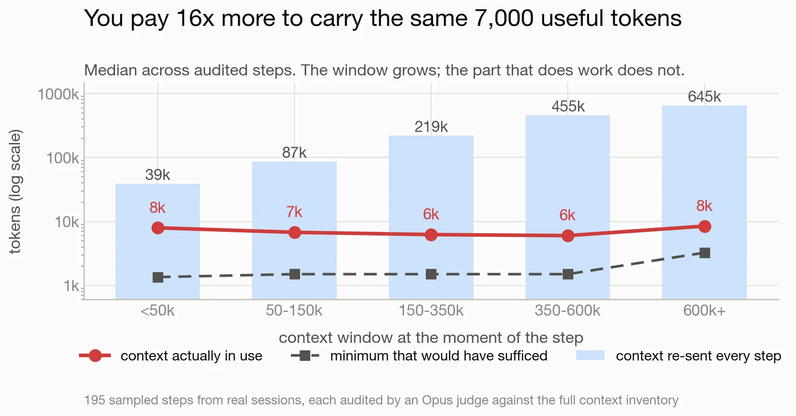
Code understanding holds value longest, still 18% at 150k to 350k, because reading is cumulative. QA and PR driving decay fastest, because each browser check or review reply is a closed loop whose result supersedes its inputs.
代码理解保持价值最久，15–35 万仍有 18%，因为阅读是累积的。QA 和 PR 推进衰减最快，因为每次浏览器检查或 review 回复都是闭环，结果会取代输入。
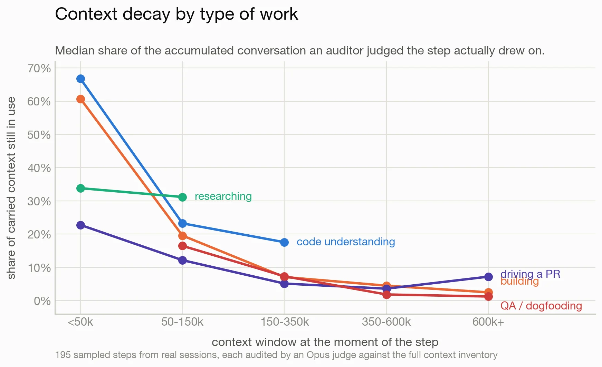
Verbatim context, or would a summary do?
28 of 195 steps, 14%, genuinely needed the verbatim old context. The cases cluster hard around copying exact strings. Where the dependency was a decision, a constraint or a finding rather than a literal, a summary carried it fine.
195 步中，28 步（14%）真正需要逐字旧上下文，集中在复制精确字符串。如果依赖的是决策、约束或发现，而不是字面量，摘要通常够用。
On the counterfactual put to every judge, replacing everything except the most recent 30k with a 5,000-token summary, 85% of steps came back unaffected, 15% slightly degraded, four out of 195 materially degraded, and zero impossible.
反事实测试：把最近 3 万之外的内容替换成 5,000 token 摘要，85% 的步骤不受影响，15% 轻微退化，4/195 实质退化，0 个变得不可能。
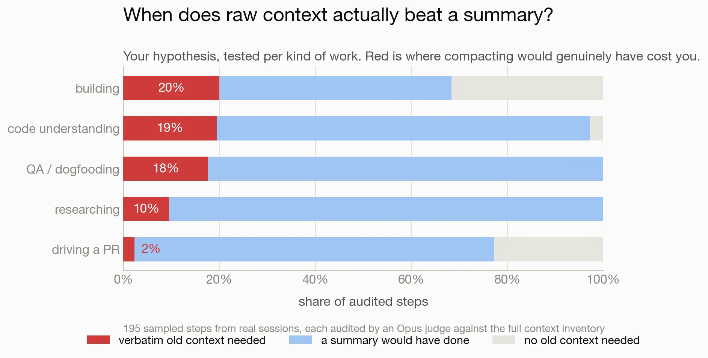
The part that complicates it
That audit has a survivorship bias: the judges only scored steps that were actually taken. A step that went subtly wrong because something had been summarised away does not show up as a bad step, it shows up as a normal step whose consequences arrive later, in review or in production. Every compaction verdict above is optimistic by an unknown amount.
这份审计有幸存者偏差：评审只打分“实际发生”的步骤。某个步骤因为上下文被摘要掉而悄悄出错，不会显示为坏步骤，而会显示为一个正常步骤，后果在 review 或生产中才出现。所以上面每个压缩结论都乐观了未知幅度。
Measuring behaviour instead of quality
In the five steps after a compaction, 41.9% of my messages contain a correction against a steady-state baseline of 17.7%. That is 2.37x, it stays elevated for at least 30 steps, and it has not fully recovered by 120. Over the same window the tool-error rate is flat at 2.6% to 3.2%: the calls still work, the decisions behind them got worse.
压缩后的 5 步内，41.9% 的用户消息包含纠正，而稳态基线是 17.7%，是 2.37 倍；至少持续 30 步，到 120 步仍未完全恢复。同期工具错误率稳定在 2.6–3.2%：调用还能工作，但调用背后的决策变差了。
Across 873 compactions, the median one takes a 574,875-token window down to a 4,382-token summary: slightly under 1% of the raw material survives, and each event costs a median 142 seconds of wall clock.
873 次压缩中，中位数把 574,875 token 压到 4,382 token，只剩不到 1%；每次压缩平均耗时 142 秒。
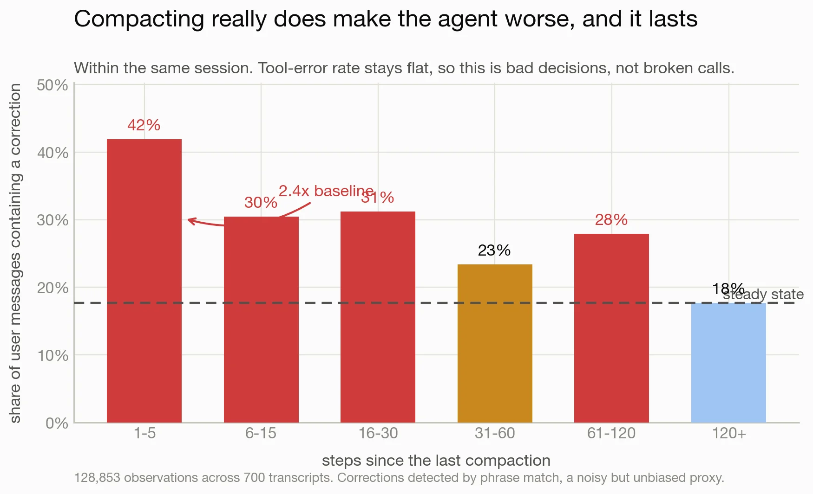
A 30-step disruption inside a 105-step cycle, which is what a 220k threshold gives you, means about 29% of all your steps happen inside the post-compaction fog. At a 577k threshold the cycle is 348 steps and the figure drops to 9%.
22 万阈值对应约 105 步一个周期，其中 30 步受干扰，约 29% 的时间在压缩后的雾里；57.7 万阈值对应 348 步周期，比例降到 9%。
The optimum depends almost entirely on one hard-to-measure parameter: how many steps of real work a single compaction destroys. About 31 steps is what I could measure. Running a 600k threshold implicitly asserts that a compaction costs around 145 steps, five times the measurable figure.
最优阈值几乎完全取决于一个难测参数：一次压缩会毁掉多少步真实工作。作者能测到约 31 步；使用 60 万阈值，等于隐含假设一次压缩损失约 145 步，是可测值的 5 倍。
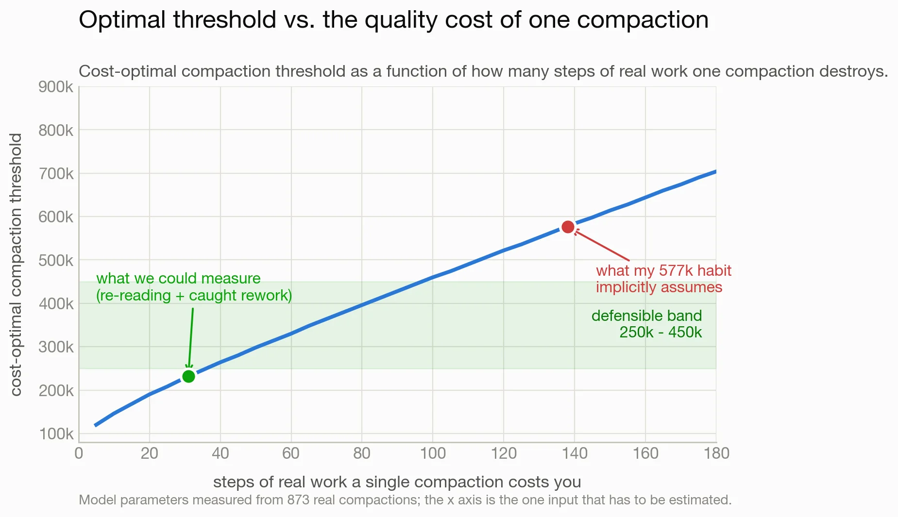
What the wide window actually costs
Going from a 232k threshold to 600k costs an extra 139M tokens per 1,000 productive steps and removes 6.1 compaction disruptions, so you are paying about 23M tokens per disruption avoided. For that to break even, one escaped defect would have to cost between 46M and 229M tokens.
从 23.2 万阈值提高到 60 万，每 1,000 个有效步骤多花 1.39 亿 token，少经历 6.1 次压缩干扰；相当于每避免一次干扰花 2,300 万 token。要让这笔账打平，一个逃逸缺陷的成本必须在 4,600 万到 2.29 亿 token 之间。
Re-running the same model with a compaction charged 55 steps of lost work instead of 28 moves the cheapest threshold from 220k to 314k, and anything between 239k and 453k lands within 10% of it. The floor at 146k is the more interesting number: below that, the whole cycle is spent recovering from the last compaction.
把“一次压缩损失 55 步”而不是 28 步代入模型，成本最优阈值从 22 万移到 31.4 万，23.9–45.3 万都在 10% 以内。下限 14.6 万更有意思：再低，整个周期都花在恢复上一次压缩上。
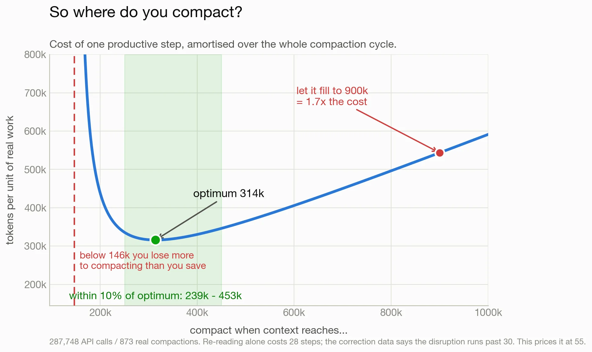
Where it lands
Three of the four measurements point to the same place: 220k from the cost model, 240k from coverage per unit of cost, and 120k to 190k from the audit. The fourth, the post-compaction correction spike, pushes the other way. Reconciling them gives a range instead of a number.
四组测量里有三组指向同一位置：成本模型 22 万，单位成本覆盖率 24 万，审计 12–19 万；第四组“压缩后纠正率飙升”把方向拉回去。综合起来是一个区间，而不是一个数。
Suggested thresholds: driving a PR 200k to 250k; research 250k to 300k; QA and dogfooding 250k to 350k; building 300k to 450k; code understanding 300k to 450k. Below about 200k the post-compaction fog starts eating your working time. Above about 600k you are paying a large premium for a benefit I could not find.
建议阈值：推进 PR 20–25 万；研究 25–30 万；QA/dogfooding 25–35 万；Building 30–45 万；代码理解 30–45 万。低于 20 万，压缩后的雾会吃掉工作时间；高于 60 万，你为一个找不到的收益支付高额溢价。
The harm concentrates at the moment of the cut, and only 0.8% of the window survives it today. Keeping a 30k to 60k verbatim tail instead of a 4,382-token digest attacks the degraded window directly: a 350k threshold with a 60k preserved tail costs 25% less per unit of work than a 600k threshold with a digest.
伤害集中在“切掉的那一刻”，而目前只有 0.8% 的窗口能存活。保留 3–6 万 token 的逐字尾部，而不是 4,382 token 摘要，能直接缓解退化：35 万阈值 + 6 万逐字尾部，比 60 万阈值 + 摘要，每单位工作成本低 25%。
Caveats
All of this is my own usage: mostly agentic coding, mostly on the LangWatch codebase. Your constants will differ. I would expect the shapes (the power law, the flat useful-context line, the post-compaction spike) to travel better than the exact numbers, but I have only verified them here.
这些都是作者自己的使用数据：以 agentic coding 为主，主要在 LangWatch 代码库上。你的常数会不同。幂律、平坦的有效上下文曲线、压缩后尖峰这些“形状”应该比具体数字更可迁移，但作者只在自身数据上验证过。
Kind of work and window size are confounded in my data, so the per-task curves only mean something across the range each one covers. The utility audit carries survivorship bias. The correction measurement is observational, not an experiment.
工作类型和窗口大小在数据里是混杂的，所以每类任务的曲线只在其覆盖区间内有意义。效用审计有幸存者偏差；纠正率测量是观察性的，不是实验。
Method
All of it comes from local session transcripts over 162 days plus gateway traces for the incident reconstruction. Usage records are deduplicated by message id. Context per call is cache reads plus cache writes plus fresh input. The cumulative cost curve takes, per agent, the running total at the first call reaching each 25k band, then the median across agents.
数据来自 162 天的本地会话 transcript，加上用于事故重建的 gateway trace。使用记录按 message id 去重；每次调用的上下文 = cache read + cache write + fresh input。累计成本曲线按每个 agent“首次达到每个 25k 区间时的累计 token”取中位数。
学习者视角
关键收获
- 上下文是持续计费，不是一次性容量。 每次工具调用都会重读窗口。
- 大窗口不等于高利用率。 600k 以上只有约 2.5% 的内容真正参与决策。
- 压缩不是免费的。 它会造成 30 步以上的决策退化，工具错误率看不出来。
- 最优阈值因任务而异。 PR 可以早压，Building 和代码理解要晚压。
- 保留逐字尾部比频繁压缩更有效。
放回课程里看
这篇是 Week 2 的定量基础。它和 Dive into Claude Code 里的“五层压缩管线”互补：一个讲机制，一个讲参数和代价。
一个反直觉点
很多人把上下文窗口当内存，越大越好。这篇文章把它当成每一步都要重新购买的带宽：窗口越大，单步越贵，而真正有用的部分几乎不变。
拓展
思考题
- 你的 agent 现在在什么阈值压缩？这个阈值是拍脑袋定的，还是有过测量？
- 如果一次压缩会让模型“忘记”某个精确字符串，你会如何设计保护机制？
- 为什么“工具错误率”不能反映压缩后的质量下降？你会用什么指标替代？
- 在什么任务里，宽窗口的溢价是合理的？请用“缺陷成本”而不是 token 成本论证。
练习
用你自己的 agent 会话做一个最小实验：
- 记录每次压缩前后的 token 数、步数、用户纠正次数；
- 画一张“压缩后第 N 步的纠正率”曲线；
- 估算一次压缩实际损失多少步；
- 根据文章表格，给出你自己的推荐阈值。